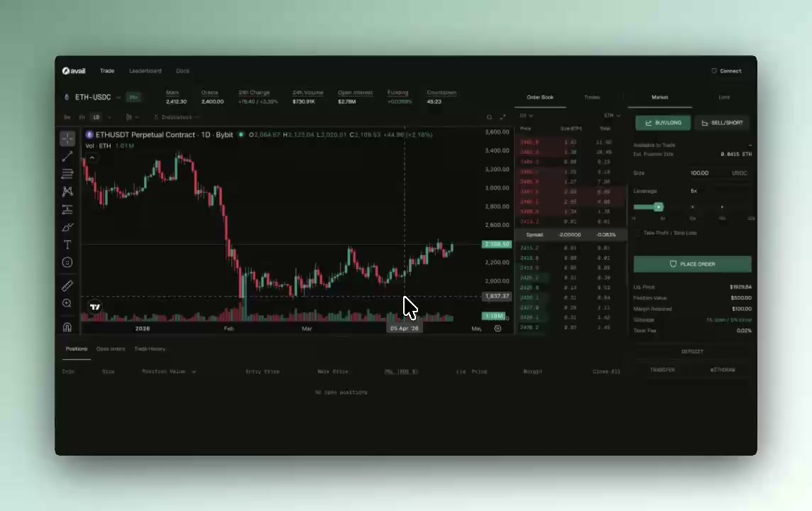

Terminal preview
Private betaPlace and manage positions in your browser.

Trade through fresh accounts while shielding the public link to your funding wallet.
01 / THE PUBLIC FOOTPRINT
Trading activity stays public. ShieldTX shields its association with your funding wallet.
02 / FOLLOW THE TRADE
Fund your balance with USDC. This is the starting point for your shielded trading activity.
03 / PRODUCT ACCESS
Built byPlace and manage positions in your browser.

Connect ShieldTX to your trading system.
Trading activity remains visible onchain. ShieldTX protects the public funding-wallet association.
Orders reach Hyperliquid after a shielding delay of a few seconds, then execute against its liquidity.
USDC is held in an Arbitrum vault. Withdrawals require protocol confirmation and your signed claim.
Explore the trust model ↗The public association between your funding wallet and your trading activity. Positions and execution remain visible onchain.
No. You can explore the ShieldTX terminal. API access is a separate route for integrating your own setup. The product is in private beta and access may be required.
Yes. Trades execute on Hyperliquid through fresh trading accounts, using Hyperliquid's liquidity.
Deposits, temporary accounts, solver activity and withdrawals remain visible. Shielding does not hide every onchain action or eliminate the possibility of inference. See the full trust model.
Shielding adds a delay of a few seconds before an order reaches Hyperliquid. Account for this in your trading workflow.
USDC is held in an Arbitrum vault. A withdrawal requires protocol confirmation, followed by a claim you sign. You and ShieldTX can see your internal balance. Read the fund control and withdrawal explanation before funding.
ACCESS SHIELDTX